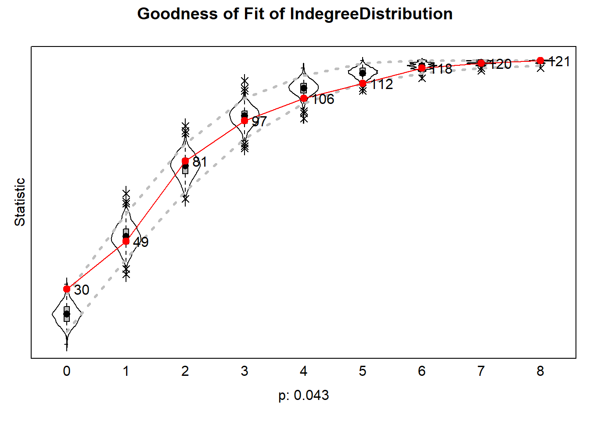
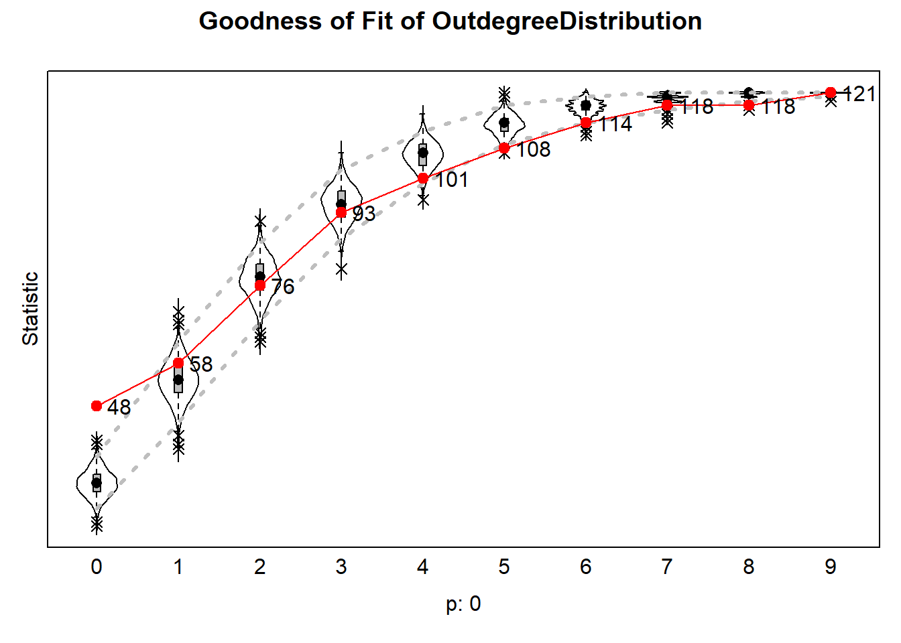
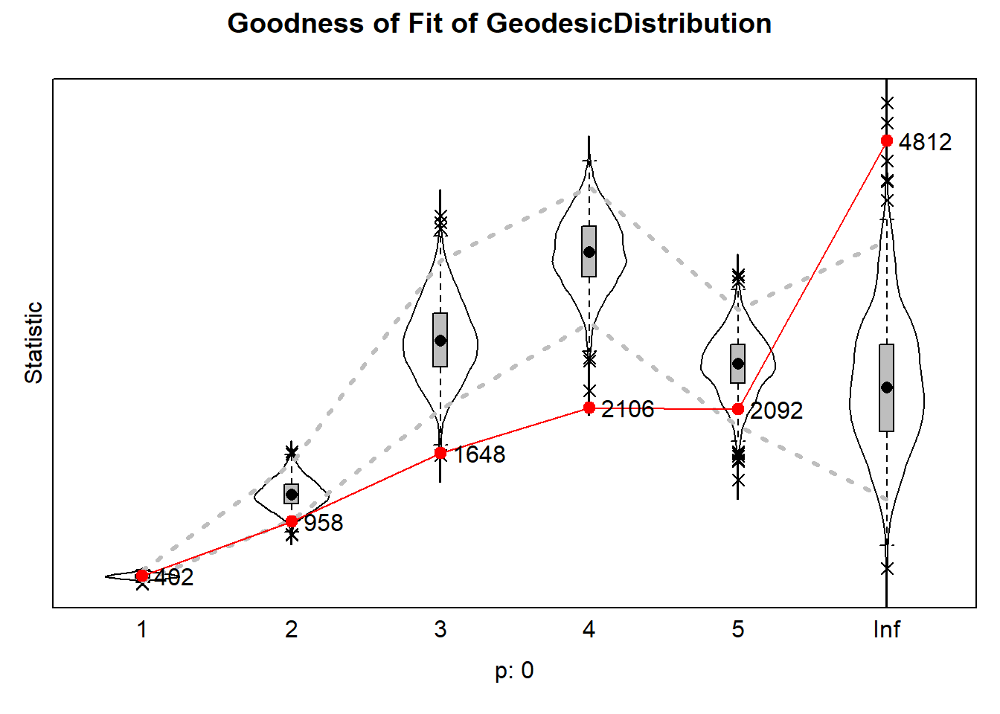
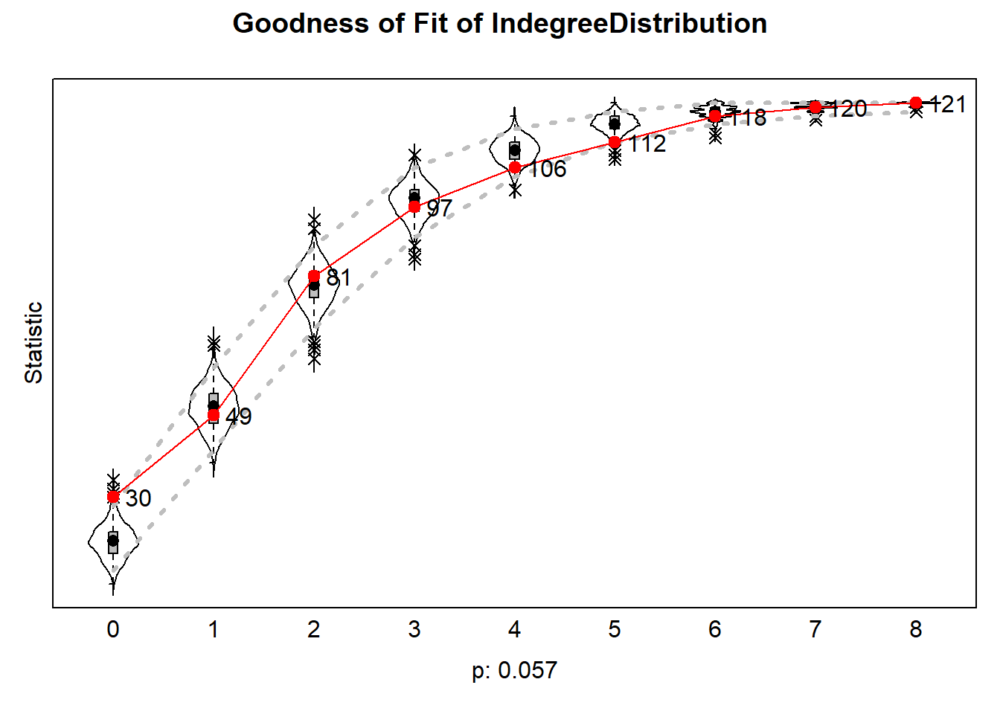
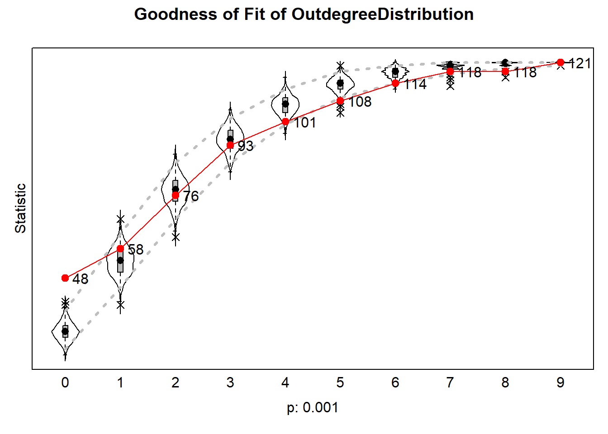
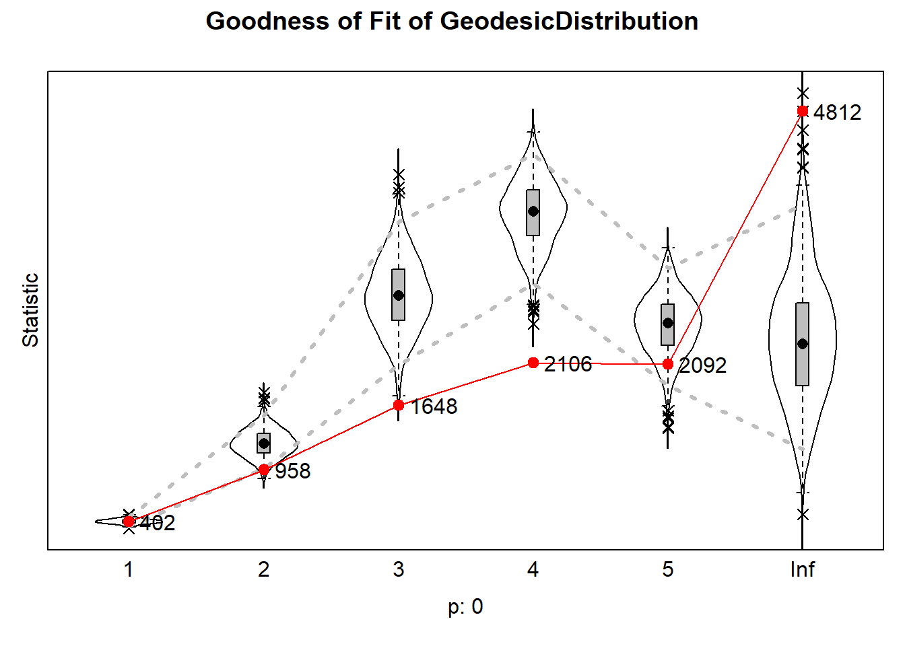

Load data
rm(list = ls())
load("./data/IndividualCharacteristics.RData")
load("./data/NetworkCharacteristics.RData")
load("./data/CivicAttitudes.RData")Create network matrices
# view(hanging[[1]])
hanging_df_t1 <- as.data.frame(hanging[[1]][1])
class(hanging_df_t1)## [1] "data.frame"# view(hanging_df_t1)
strong_netw_t1 <- data.matrix(hanging_df_t1)
strong_netw_t1[strong_netw_t1==9]<-NA
class(strong_netw_t1)## [1] "matrix" "array"# view(strong_netw_t1)
hanging_df_t2 <- as.data.frame(hanging[[1]][2])
class(hanging_df_t2)## [1] "data.frame"# view(hanging_df_t2)
strong_netw_t2 <- data.matrix(hanging_df_t2)
strong_netw_t2[strong_netw_t2==9]<-NA
class(strong_netw_t2)## [1] "matrix" "array"# view(strong_netw_t2)Make civic attitudes scale
#Wave 1
IC_df <- as.data.frame(T1civeng[[1]])
IC_df$missings <- rowSums(is.na(IC_df))
IC_df$ce_t1 <- ifelse(IC_df$missings <= 1, rowMeans(IC_df[,1:4]), NA)
#Wave 2
IC_df2 <- as.data.frame(T2civeng[[1]])
IC_df2$missings <- rowSums(is.na(IC_df2))
IC_df2$ce_t2 <- ifelse(IC_df2$missings <= 1, rowMeans(IC_df2[,1:4]), NA)Putting the behavioural data in a matrix
IC_df <- IC_df %>%
rownames_to_column(var = "id")
IC_df2 <- IC_df2 %>%
rownames_to_column(var = "id")
IC_df <- left_join(IC_df, IC_df2, by=c("id"))
behy <- IC_df %>%
dplyr::select("ce_t1", "ce_t2") %>%
as.matrix()Creating an RSiena data frame
behy <- sienaDependent(behy, type = c("behavior"))
nety <- sienaDependent(array(data= c(strong_netw_t1, strong_netw_t2), dim=c(dim(strong_netw_t1),2)))
mydata <- sienaDataCreate(behy, nety)Run a model with no effects
myAlgorithm <- sienaAlgorithmCreate(projname = "test")
myeff <- getEffects(mydata)
simple_model <- siena07(myAlgorithm, data = mydata, effects = myeff, returnDeps = TRUE)simple_model## Estimates, standard errors and convergence t-ratios
##
## Estimate Standard Convergence
## Error t-ratio
## Network Dynamics
## 1. rate basic rate parameter nety 6.6472 ( 0.5150 ) 0.0477
## 2. eval outdegree (density) -2.6343 ( 0.0824 ) -0.0306
## 3. eval reciprocity 2.2074 ( 0.1755 ) 0.0338
##
## Behavior Dynamics
## 4. rate rate behy period 1 2.4651 ( 0.5280 ) 0.0124
## 5. eval behy linear shape 0.1802 ( 0.1028 ) -0.0421
## 6. eval behy quadratic shape -0.2784 ( 0.0720 ) 0.0427
##
## Overall maximum convergence ratio: 0.1219
##
##
## Total of 2647 iteration steps.Rate basic rate parameter nety:
Eval outdegree (density):
Indicates how dense the network is.
In this case: A negative value, meaning that the chance of observing a tie is lower than the chance of not forming a tie
Nodes, in general, form relatively few ties (question: Relative to whom?)
Eval reciprocity:
Indicated how often a tie that is formed is reciprocated
In this case: A positive value, meaning that the chance of observing a reciprocated tie is higher than the chance of not forming a reciprocated tie
Nodes, in general, prefer to form/ maintain ties to create a reciprocated relation, than start a relationship with a new person
Rate rate behy period 1:
Eval behy linear shape:
Eval behy quadratic shape:
Expected homophily effect of gender
# Create gender variable
gender1 <- gender[[1]][,1]
gender2 <- gender[[1]][,2]
gender <- coalesce(gender1, gender2)
head(gender)## 30001 30002 30003 30004 30005 30006
## 2 2 1 2 1 2# Add gender as constant covariate
gender_covar <- coCovar(gender)
mydata_1 <- sienaDataCreate(nety, gender_covar, behy)
myeff_1 <- getEffects(mydata_1)
myeff_1 <- includeEffects(myeff_1, simX, interaction1 = "gender_covar")## effectNumber effectName shortName include fix test initialValue parm
## 1 324 gender_covar similarity simX TRUE FALSE FALSE 0 0Add effects for selection and influence for civic attitudes
# General effects
myeff_1 <- includeEffects(myeff_1, egoX, altX, simX, interaction1 = "behy")## effectNumber effectName shortName include fix test initialValue parm
## 1 447 behy alter altX TRUE FALSE FALSE 0 0
## 2 462 behy ego egoX TRUE FALSE FALSE 0 0
## 3 508 behy similarity simX TRUE FALSE FALSE 0 0# Adding influence effects for indegree, outdegree and assimilation
myeff_1 <- includeEffects(myeff_1, name = "behy", avAlt, indeg, outdeg, interaction1 = "nety")## effectNumber effectName shortName include fix test initialValue parm
## 1 757 behy indegree indeg TRUE FALSE FALSE 0 0
## 2 760 behy outdegree outdeg TRUE FALSE FALSE 0 0
## 3 776 behy average alter avAlt TRUE FALSE FALSE 0 0# Set algorithm
myCoEvAlgorithm <- sienaAlgorithmCreate(projname = "test")## If you use this algorithm object, siena07 will create/use an output file test.txt .Running the model
model_week7 <- siena07(myCoEvAlgorithm, data = mydata_1, effects = myeff_1)model_week7## Estimates, standard errors and convergence t-ratios
##
## Estimate Standard Convergence
## Error t-ratio
## Network Dynamics
## 1. rate basic rate parameter nety 6.5644 ( 0.5145 ) -0.0818
## 2. eval outdegree (density) -2.6993 ( 0.1078 ) -0.0398
## 3. eval reciprocity 2.2292 ( 0.1972 ) 0.0056
## 4. eval gender_covar similarity 0.3164 ( 0.1305 ) 0.0506
## 5. eval behy alter -0.0827 ( 0.1114 ) -0.0214
## 6. eval behy ego -0.2628 ( 0.1280 ) -0.0096
## 7. eval behy similarity 0.4658 ( 0.7440 ) 0.0001
##
## Behavior Dynamics
## 8. rate rate behy period 1 2.4293 ( 0.4658 ) -0.0252
## 9. eval behy linear shape 0.1422 ( 0.2212 ) 0.0230
## 10. eval behy quadratic shape -0.2804 ( 0.0832 ) -0.0143
## 11. eval behy indegree 0.0234 ( 0.0973 ) -0.0210
## 12. eval behy outdegree -0.0091 ( 0.1074 ) 0.0469
## 13. eval behy average alter -0.1098 ( 0.3824 ) -0.0369
##
## Overall maximum convergence ratio: 0.1670
##
##
## Total of 3141 iteration steps.# All convergence t-ratio should be <.1 --> is met
# Overall max convergence ratio should be <.25 --> is met (ratio = 0.1670)Network dynamics:
Rate basic rate parameter nety:
Eval outdegree (density):
Indicates how dense the network is.
In this case: A negative value, meaning that the chance of observing a tie is lower than the chance of not forming a tie
Nodes, in general, form relatively few ties (question: Relative to whom?)
Eval reciprocity:
Indicated how often a tie that is formed is reciprocated
In this case: A positive value, meaning that the chance of observing a reciprocated tie is higher than the chance of not forming a reciprocated tie
Nodes, in general, prefer to form/ maintain ties to create a reciprocated relation, than start a relationship with a new person
Eval gender_covar similarity:
How similar are connected ties with regards to the covar (in this case gender)
In this case: A positive value, meaning that it is more likely that i makes a tie with j compared to with h if j has the same gender as i (and h hasn’t)
Eval behy alter
About network homophily
Sender homophily –> Does i prefer to send ties to someone similar to themselves
In this case: Negative value –> i prefers to send a tie to alter j over alter h, where j has dissimilar preferences
Eval behy ego
About network homophily
Receiver homophily –> Does i get more ties from people with similar attitudes?
In this case: Negative value –> i is more likely to get a tie from j than from h, where j has dissimilar preferences
Eval behy similarity
Behaviour dynamics:
Rate rate behy period 1:
Eval behy linear shape:
Eval behy quadratic shape:
About how nodes who differ from the mean tend to change their behaviour (in this case assumed to be quadratic) (Question?)
The attractiveness of further steps u the behaviour ladder (this is the mountain I think), depends on where the actor is on the ladder
Eval behy indegree:
Eval behy outdegree:
Eval behy average alter:
About influence effects
Average alter effect –> i behaviour multiplied by the average behaviour of their alters
In this case: A negative value –> being friends with people with positive civic attitude scores, makes you more negative (?? huh?)
But it is not significant, so no effect
gender_covar <- coCovar(gender)
mydata_1 <- sienaDataCreate(nety, gender_covar, behy)
myeff_2 <- getEffects(mydata_1)
# Start with a covariate for gender, with same-ego, same-alter, and same-x
myeff_2 <- includeEffects(myeff_2, egoX, altX, sameX, interaction1 = "gender_covar")## effectNumber effectName shortName include fix test initialValue parm
## 1 263 gender_covar alter altX TRUE FALSE FALSE 0 0
## 2 278 gender_covar ego egoX TRUE FALSE FALSE 0 0
## 3 334 same gender_covar sameX TRUE FALSE FALSE 0 0# Behavioural effects: egoX, AltX, and absDiffX
myeff_2 <- includeEffects(myeff_2, egoX, altX, absDiffX, interaction1 = "behy")## effectNumber effectName shortName include fix test initialValue parm
## 1 447 behy alter altX TRUE FALSE FALSE 0 0
## 2 462 behy ego egoX TRUE FALSE FALSE 0 0
## 3 487 behy abs. difference absDiffX TRUE FALSE FALSE 0 0# Adding influence effects for indegree, outdegree and assimilation
# AvAlt_CC because that one updates its mean everytime, rather than using the grand mean
myeff_2 <- includeEffects(myeff_2, name = "behy", avAlt_CC, indeg, outdeg, interaction1 = "nety")## effectNumber effectName shortName include fix test initialValue parm
## 1 757 behy indegree indeg TRUE FALSE FALSE 0 0
## 2 760 behy outdegree outdeg TRUE FALSE FALSE 0 0# maxAlt
# Set algorithm
myCoEvAlgorithm <- sienaAlgorithmCreate(projname = "test", MaxDegree = c(nety = 10))## If you use this algorithm object, siena07 will create/use an output file test.txt .Running the model
model_week7_2 <- siena07(myCoEvAlgorithm, data = mydata_1, effects = myeff_2, returnDeps = TRUE)model_week7_2## Estimates, standard errors and convergence t-ratios
##
## Estimate Standard Convergence
## Error t-ratio
## Network Dynamics
## 1. rate basic rate parameter nety 6.6071 ( 0.6634 ) 0.0420
## 2. eval outdegree (density) -2.6783 ( 0.2365 ) -0.0466
## 3. eval reciprocity 2.2336 ( 0.1910 ) -0.0444
## 4. eval gender_covar alter 0.1224 ( 0.1668 ) -0.0088
## 5. eval gender_covar ego -0.2983 ( 0.1878 ) -0.0159
## 6. eval same gender_covar 0.3618 ( 0.1287 ) -0.0605
## 7. eval behy alter -0.0671 ( 0.1186 ) 0.0238
## 8. eval behy ego -0.2159 ( 0.1281 ) 0.0214
## 9. eval behy abs. difference -0.2049 ( 0.2003 ) -0.0052
##
## Behavior Dynamics
## 10. rate rate behy period 1 2.4654 ( 0.5853 ) 0.1042
## 11. eval behy linear shape 0.1375 ( 0.2455 ) 0.0221
## 12. eval behy quadratic shape -0.2799 ( 0.0759 ) 0.0119
## 13. eval behy indegree 0.0264 ( 0.0816 ) 0.0614
## 14. eval behy outdegree -0.0115 ( 0.0808 ) 0.0046
##
## Overall maximum convergence ratio: 0.1496
##
##
## Degrees constrained to maximum values:
## nety : 10
##
##
## Total of 3035 iteration steps.options(scipen = 50)
results <- data.frame(
effect = model_week7_2$effects$effectName,
b = model_week7_2$theta,
se = model_week7_2$se,
t = model_week7_2$theta / model_week7_2$se,
p = 2 * pnorm(-abs(model_week7_2$theta / model_week7_2$se)))
results## effect b se t
## 1 basic rate parameter nety 6.60709987 0.66338392 9.9596925
## 2 outdegree (density) -2.67827767 0.23645147 -11.3269655
## 3 reciprocity 2.23359035 0.19098647 11.6950186
## 4 gender_covar alter 0.12236355 0.16677641 0.7336982
## 5 gender_covar ego -0.29826099 0.18778278 -1.5883298
## 6 same gender_covar 0.36176156 0.12868280 2.8112658
## 7 behy alter -0.06710277 0.11859240 -0.5658269
## 8 behy ego -0.21587842 0.12811694 -1.6850108
## 9 behy abs. difference -0.20491653 0.20033103 -1.0228896
## 10 rate behy period 1 2.46536763 0.58530819 4.2120846
## 11 behy linear shape 0.13749580 0.24554064 0.5599717
## 12 behy quadratic shape -0.27985090 0.07587623 -3.6882552
## 13 behy indegree 0.02642352 0.08156217 0.3239678
## 14 behy outdegree -0.01145818 0.08077588 -0.1418515
## p
## 1 0.0000000000000000000000228769263040783
## 2 0.0000000000000000000000000000096489928
## 3 0.0000000000000000000000000000001351575
## 4 0.4631327002634285094906374524725833908
## 5 0.1122117724246344955263410270163149107
## 6 0.0049346997525722465643971403892464878
## 7 0.5715114544205367463902689451060723513
## 8 0.0919864845037373507485867207833507564
## 9 0.3063600268264591863776047375722555444
## 10 0.0000253024710942648883372010915060457
## 11 0.5754987682934362691611340778763405979
## 12 0.0002257971308786055808417309043178989
## 13 0.7459623973627347304216073098359629512
## 14 0.8871973412705221884166917334368918091Behy ego, behy alter and behy abs. difference zijn allemaal zeer niet significant. Behy ego en behy alter kunnen verwwijderd worden.
myeff_3 <- getEffects(mydata_1)
# Start with a covariate for gender, with same-ego, same-alter, and same-x
myeff_3 <- includeEffects(myeff_3, sameX, interaction1 = "gender_covar")## effectNumber effectName shortName include fix test initialValue parm
## 1 334 same gender_covar sameX TRUE FALSE FALSE 0 0# Behavioural effects: egoX, AltX, and absDiffX
myeff_3 <- includeEffects(myeff_3, egoX, altX, absDiffX, interaction1 = "behy")## effectNumber effectName shortName include fix test initialValue parm
## 1 447 behy alter altX TRUE FALSE FALSE 0 0
## 2 462 behy ego egoX TRUE FALSE FALSE 0 0
## 3 487 behy abs. difference absDiffX TRUE FALSE FALSE 0 0# Adding influence effects for indegree, outdegree and assimilation
# AvAlt_CC because that one updates its mean everytime, rather than using the grand mean
myeff_3 <- includeEffects(myeff_3, name = "behy", avAlt_CC, indeg, outdeg, interaction1 = "nety")## effectNumber effectName shortName include fix test initialValue parm
## 1 757 behy indegree indeg TRUE FALSE FALSE 0 0
## 2 760 behy outdegree outdeg TRUE FALSE FALSE 0 0# maxAlt
# Set algorithm
myCoEvAlgorithm <- sienaAlgorithmCreate(projname = "test", MaxDegree = c(nety = 10))## If you use this algorithm object, siena07 will create/use an output file test.txt .Running the model
model_week7_3 <- siena07(myCoEvAlgorithm, data = mydata_1, effects = myeff_3, returnDeps = TRUE)model_week7_3## Estimates, standard errors and convergence t-ratios
##
## Estimate Standard Convergence
## Error t-ratio
## Network Dynamics
## 1. rate basic rate parameter nety 6.5336 ( 0.6061 ) 0.0670
## 2. eval outdegree (density) -2.6375 ( 0.2211 ) -0.0038
## 3. eval reciprocity 2.2222 ( 0.1944 ) -0.0518
## 4. eval same gender_covar 0.3175 ( 0.1276 ) -0.0196
## 5. eval behy alter -0.0594 ( 0.1218 ) 0.0400
## 6. eval behy ego -0.2666 ( 0.1509 ) -0.0659
## 7. eval behy abs. difference -0.2273 ( 0.1920 ) -0.0197
##
## Behavior Dynamics
## 8. rate rate behy period 1 2.4273 ( 0.5356 ) -0.0416
## 9. eval behy linear shape 0.1457 ( 0.2270 ) 0.0023
## 10. eval behy quadratic shape -0.2810 ( 0.0730 ) 0.0294
## 11. eval behy indegree 0.0213 ( 0.0821 ) -0.0131
## 12. eval behy outdegree -0.0088 ( 0.0866 ) 0.0149
##
## Overall maximum convergence ratio: 0.1353
##
##
## Degrees constrained to maximum values:
## nety : 10
##
##
## Total of 3060 iteration steps.options(scipen = 50)
results <- data.frame(
effect = model_week7_3$effects$effectName,
b = model_week7_3$theta,
se = model_week7_3$se,
t = model_week7_3$theta / model_week7_3$se,
p = 2 * pnorm(-abs(model_week7_3$theta / model_week7_3$se)))
results## effect b se t
## 1 basic rate parameter nety 6.533586495 0.60607128 10.7802279
## 2 outdegree (density) -2.637460888 0.22105741 -11.9311127
## 3 reciprocity 2.222159272 0.19443935 11.4285470
## 4 same gender_covar 0.317461085 0.12756693 2.4885846
## 5 behy alter -0.059440163 0.12183520 -0.4878735
## 6 behy ego -0.266637811 0.15091762 -1.7667772
## 7 behy abs. difference -0.227315715 0.19203635 -1.1837119
## 8 rate behy period 1 2.427333890 0.53560381 4.5319578
## 9 behy linear shape 0.145702267 0.22701953 0.6418050
## 10 behy quadratic shape -0.281016203 0.07302569 -3.8481828
## 11 behy indegree 0.021264218 0.08210859 0.2589768
## 12 behy outdegree -0.008764945 0.08658300 -0.1012317
## p
## 1 0.000000000000000000000000004268270760352
## 2 0.000000000000000000000000000000008147705
## 3 0.000000000000000000000000000003011048782
## 4 0.012825273385460557451498431191794225015
## 5 0.625639462595135364963994106801692396402
## 6 0.077265551773048862793658031478116754442
## 7 0.236527112728133787067363869027758482844
## 8 0.000005843951784698691942834813950469197
## 9 0.520999804404095101517668808810412883759
## 10 0.000118997248661600519181909263455310111
## 11 0.795653168574488423026025429862784221768
## 12 0.919366528164128005151667366590118035674Adding maxAlt
myeff_4 <- getEffects(mydata_1)
# Start with a covariate for gender, with same-ego, same-alter, and same-x
myeff_4 <- includeEffects(myeff_4, sameX, interaction1 = "gender_covar")## effectNumber effectName shortName include fix test initialValue parm
## 1 334 same gender_covar sameX TRUE FALSE FALSE 0 0# Behavioural effects: egoX, AltX, and absDiffX
myeff_4 <- includeEffects(myeff_4, egoX, altX, absDiffX, interaction1 = "behy")## effectNumber effectName shortName include fix test initialValue parm
## 1 447 behy alter altX TRUE FALSE FALSE 0 0
## 2 462 behy ego egoX TRUE FALSE FALSE 0 0
## 3 487 behy abs. difference absDiffX TRUE FALSE FALSE 0 0# Adding influence effects for indegree, outdegree and assimilation
# AvAlt_CC because that one updates its mean everytime, rather than using the grand mean
myeff_4 <- includeEffects(myeff_4, name = "behy", avAlt_CC, indeg, outdeg, maxAlt, interaction1 = "nety")## effectNumber effectName shortName include fix test initialValue parm
## 1 757 behy indegree indeg TRUE FALSE FALSE 0 0
## 2 760 behy outdegree outdeg TRUE FALSE FALSE 0 0
## 3 813 behy max. alter maxAlt TRUE FALSE FALSE 0 0# Set algorithm
myCoEvAlgorithm <- sienaAlgorithmCreate(projname = "test", MaxDegree = c(nety = 10))## If you use this algorithm object, siena07 will create/use an output file test.txt .Running the model
model_week7_4 <- siena07(myCoEvAlgorithm, data = mydata_1, effects = myeff_4, returnDeps = TRUE)model_week7_4## Estimates, standard errors and convergence t-ratios
##
## Estimate Standard Convergence
## Error t-ratio
## Network Dynamics
## 1. rate basic rate parameter nety 6.5620 ( 0.5433 ) 0.0646
## 2. eval outdegree (density) -2.6316 ( 0.2111 ) -0.0362
## 3. eval reciprocity 2.2360 ( 0.1967 ) -0.0018
## 4. eval same gender_covar 0.3181 ( 0.1326 ) -0.0575
## 5. eval behy alter -0.0578 ( 0.1235 ) 0.0333
## 6. eval behy ego -0.2610 ( 0.1445 ) -0.0018
## 7. eval behy abs. difference -0.2358 ( 0.2195 ) -0.0547
##
## Behavior Dynamics
## 8. rate rate behy period 1 2.4218 ( 0.5932 ) -0.0142
## 9. eval behy linear shape 0.1444 ( 0.2153 ) -0.0049
## 10. eval behy quadratic shape -0.2809 ( 0.0720 ) -0.0092
## 11. eval behy indegree 0.0272 ( 0.0939 ) 0.0088
## 12. eval behy outdegree -0.0138 ( 0.0924 ) -0.0201
##
## Overall maximum convergence ratio: 0.1253
##
##
## Degrees constrained to maximum values:
## nety : 10
##
##
## Total of 3060 iteration steps.options(scipen = 50)
results <- data.frame(
effect = model_week7_4$effects$effectName,
b = model_week7_4$theta,
se = model_week7_4$se,
t = model_week7_4$theta / model_week7_4$se,
p = 2 * pnorm(-abs(model_week7_4$theta / model_week7_4$se)))
results## effect b se t
## 1 basic rate parameter nety 6.56195506 0.54330367 12.0778773
## 2 outdegree (density) -2.63157427 0.21106612 -12.4680091
## 3 reciprocity 2.23595212 0.19673006 11.3655845
## 4 same gender_covar 0.31805158 0.13260650 2.3984614
## 5 behy alter -0.05782375 0.12350571 -0.4681869
## 6 behy ego -0.26096572 0.14450433 -1.8059371
## 7 behy abs. difference -0.23575046 0.21953613 -1.0738572
## 8 rate behy period 1 2.42175502 0.59320899 4.0824651
## 9 behy linear shape 0.14439603 0.21528248 0.6707282
## 10 behy quadratic shape -0.28093006 0.07195241 -3.9043872
## 11 behy indegree 0.02715964 0.09390499 0.2892247
## 12 behy outdegree -0.01376158 0.09240417 -0.1489281
## p
## 1 0.0000000000000000000000000000000013824260
## 2 0.0000000000000000000000000000000000111579
## 3 0.0000000000000000000000000000062047743051
## 4 0.0164641097217700441146526202373934211209
## 5 0.6396509678601414172760541987372562289238
## 6 0.0709281670706145561666744470130652189255
## 7 0.2828866893434176521537892767810262739658
## 8 0.0000445604971323753049072813325892639114
## 9 0.5023937022446414157883509687962941825390
## 10 0.0000944644314487563964768956914497266553
## 11 0.7724094391400201375930123504076618701220
## 12 0.8816103737651856953050355514278635382652gofi0 <- RSiena::sienaGOF(model_week7_4, IndegreeDistribution, verbose = FALSE, join = TRUE, varName = "nety")
gofo0 <- RSiena:: sienaGOF(model_week7_4, OutdegreeDistribution, verbose = FALSE, join = TRUE, levls = c(0:10, 15, 20), varName = "nety")
GeodesicDistribution <- function (i, data, sims, period, groupName,
varName, levls=c(1:5,Inf), cumulative=TRUE, ...) {
x <- networkExtraction(i, data, sims, period, groupName, varName)
require(network)
require(sna)
a <- sna::geodist(symmetrize(x))$gdist
if (cumulative)
{
gdi <- sapply(levls, function(i){ sum(a<=i) })
}
else
{
gdi <- sapply(levls, function(i){ sum(a==i) })
}
names(gdi) <- as.character(levls)
gdi
}
gof0.gd <- RSiena:: sienaGOF(model_week7_4, GeodesicDistribution, cumulative = FALSE, verbose = FALSE, join = TRUE, varName = "nety")## Loading required package: sna## sna: Tools for Social Network Analysis
## Version 2.8 created on 2024-09-07.
## copyright (c) 2005, Carter T. Butts, University of California-Irvine
## For citation information, type citation("sna").
## Type help(package="sna") to get started.##
## Attaching package: 'sna'## The following objects are masked from 'package:igraph':
##
## betweenness, bonpow, closeness, components, degree, dyad.census, evcent, hierarchy,
## is.connected, neighborhood, triad.census## The following objects are masked from 'package:ape':
##
## consensus, degreeplot(gofi0)
plot(gofo0)## Note: some statistics are not plotted because their variance is 0.
## This holds for the statistics: 10 15 20.
plot(gof0.gd)
Stappen die we genomen hebben (nav GoF): 1. Max aantal nominaties naar 10 (niet echt een spannend effect, maar toch) 2. Outdegree isolates meenemen
gender_covar <- coCovar(gender)
mydata_1 <- sienaDataCreate(nety, gender_covar, behy)
myeff_3 <- getEffects(mydata_1)
myeff_3 <- includeEffects(myeff_3, egoX, altX, sameX, interaction1 = "gender_covar")## effectNumber effectName shortName include fix test initialValue parm
## 1 263 gender_covar alter altX TRUE FALSE FALSE 0 0
## 2 278 gender_covar ego egoX TRUE FALSE FALSE 0 0
## 3 334 same gender_covar sameX TRUE FALSE FALSE 0 0# General effects
myeff_3 <- includeEffects(myeff_3, egoX, altX, absDiffX, interaction1 = "behy")## effectNumber effectName shortName include fix test initialValue parm
## 1 447 behy alter altX TRUE FALSE FALSE 0 0
## 2 462 behy ego egoX TRUE FALSE FALSE 0 0
## 3 487 behy abs. difference absDiffX TRUE FALSE FALSE 0 0# Adding influence effects for indegree, outdegree and assimilation
myeff_3 <- includeEffects(myeff_3, name = "behy", avAlt, indeg, outdeg, outIso, interaction1 = "nety")## effectNumber effectName shortName include fix test initialValue parm
## 1 757 behy indegree indeg TRUE FALSE FALSE 0 0
## 2 760 behy outdegree outdeg TRUE FALSE FALSE 0 0
## 3 776 behy average alter avAlt TRUE FALSE FALSE 0 0#avAlt_cc vonden we leuk en maxAlt
# Set algorithm
myCoEvAlgorithm <- sienaAlgorithmCreate(projname = "test", MaxDegree = c(nety = 10))## If you use this algorithm object, siena07 will create/use an output file test.txt .Running the model
model_week7_3 <- siena07(myCoEvAlgorithm, data = mydata_1, effects = myeff_3, returnDeps = TRUE)model_week7_3## Estimates, standard errors and convergence t-ratios
##
## Estimate Standard Convergence
## Error t-ratio
## Network Dynamics
## 1. rate basic rate parameter nety 6.5336 ( 0.6061 ) 0.0670
## 2. eval outdegree (density) -2.6375 ( 0.2211 ) -0.0038
## 3. eval reciprocity 2.2222 ( 0.1944 ) -0.0518
## 4. eval same gender_covar 0.3175 ( 0.1276 ) -0.0196
## 5. eval behy alter -0.0594 ( 0.1218 ) 0.0400
## 6. eval behy ego -0.2666 ( 0.1509 ) -0.0659
## 7. eval behy abs. difference -0.2273 ( 0.1920 ) -0.0197
##
## Behavior Dynamics
## 8. rate rate behy period 1 2.4273 ( 0.5356 ) -0.0416
## 9. eval behy linear shape 0.1457 ( 0.2270 ) 0.0023
## 10. eval behy quadratic shape -0.2810 ( 0.0730 ) 0.0294
## 11. eval behy indegree 0.0213 ( 0.0821 ) -0.0131
## 12. eval behy outdegree -0.0088 ( 0.0866 ) 0.0149
##
## Overall maximum convergence ratio: 0.1353
##
##
## Degrees constrained to maximum values:
## nety : 10
##
##
## Total of 3060 iteration steps.options(scipen = 50)
results <- data.frame(
effect = model_week7_3$effects$effectName,
b = model_week7_3$theta,
se = model_week7_3$se,
t = model_week7_3$theta / model_week7_3$se,
p = 2 * pnorm(-abs(model_week7_3$theta / model_week7_3$se)))
results## effect b se t
## 1 basic rate parameter nety 6.533586495 0.60607128 10.7802279
## 2 outdegree (density) -2.637460888 0.22105741 -11.9311127
## 3 reciprocity 2.222159272 0.19443935 11.4285470
## 4 same gender_covar 0.317461085 0.12756693 2.4885846
## 5 behy alter -0.059440163 0.12183520 -0.4878735
## 6 behy ego -0.266637811 0.15091762 -1.7667772
## 7 behy abs. difference -0.227315715 0.19203635 -1.1837119
## 8 rate behy period 1 2.427333890 0.53560381 4.5319578
## 9 behy linear shape 0.145702267 0.22701953 0.6418050
## 10 behy quadratic shape -0.281016203 0.07302569 -3.8481828
## 11 behy indegree 0.021264218 0.08210859 0.2589768
## 12 behy outdegree -0.008764945 0.08658300 -0.1012317
## p
## 1 0.000000000000000000000000004268270760352
## 2 0.000000000000000000000000000000008147705
## 3 0.000000000000000000000000000003011048782
## 4 0.012825273385460557451498431191794225015
## 5 0.625639462595135364963994106801692396402
## 6 0.077265551773048862793658031478116754442
## 7 0.236527112728133787067363869027758482844
## 8 0.000005843951784698691942834813950469197
## 9 0.520999804404095101517668808810412883759
## 10 0.000118997248661600519181909263455310111
## 11 0.795653168574488423026025429862784221768
## 12 0.919366528164128005151667366590118035674gofi0 <- RSiena::sienaGOF(model_week7_3, IndegreeDistribution, verbose = FALSE, join = TRUE, varName = "nety")
gofo0 <- RSiena:: sienaGOF(model_week7_3, OutdegreeDistribution, verbose = FALSE, join = TRUE, levls = c(0:10, 15, 20), varName = "nety")
gof0.gd <- RSiena:: sienaGOF(model_week7_3, GeodesicDistribution, cumulative = FALSE, verbose = FALSE, join = TRUE, varName = "nety")plot(gofi0)
plot(gofo0)## Note: some statistics are not plotted because their variance is 0.
## This holds for the statistics: 10 15 20.
plot(gof0.gd)